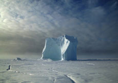

Sirmilik

Zacharias Kunuk – Kanada 2010 – 10 Min.
B: Zacharias Kunuk – K: Steve Cosens, Russell Gienapp – S: Andres Landau – M: Andrew Whiteman, Dean Stone, Tanya Tagaq
HDCam – Inuktitut
Ton und Bilder für diesen Film wurden im Sirmilik National Park in Nunavut aufgenommen. Er zeigt die eisigen Weiten, den Himmel und Inuit Gemeinschaften in der Arktis und die Schönheit des kanadischen Nordens. "Sirmilik" wurde als einer von 13 Filmen des National Parks Project produziert.
Zacharias Kunuk, geboren 1957 in Kapuivik, Kanada , lebt und arbeitet in Igloolik. Sein Film Atanarjuat: "The Fast Runner" (2001), der erste vollständig in Inuktitut gedrehte Film, wurde mit zahlreichen Auszeichnungen geehrt.